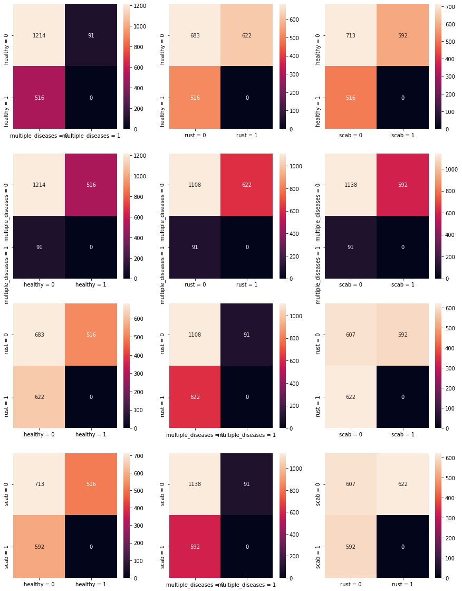
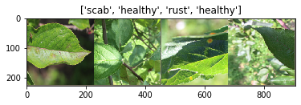
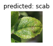
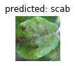
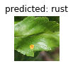
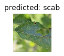
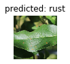
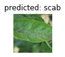

Plant Pathology - Kaggle Competition
# Import Libraries
from __future__ import print_function, division
import os
import pickle
import numpy as np
import tqdm
import scipy, scipy.misc
import pandas as pd
from PIL import Image
from matplotlib.pyplot import imshow
from collections import defaultdict
import matplotlib.pyplot as plt
import pandas as pd
import seaborn as sns
from shutil import copyfile
from PIL import Image
from skimage.metrics import structural_similarity as ssim
%matplotlib inline
from scipy.spatial import distance
import torch
import torch.nn as nn
import torch.optim as optim
from torch.optim import lr_scheduler
import numpy as np
import torchvision
from torchvision import datasets, models, transforms
import matplotlib.pyplot as plt
import time
import os
import copy
filepath = 'C:\\Users\\AOlson\\Documents\\Kaggle\\plant_pathology'
# Read in Train csv
train = pd.read_csv(filepath + '\\train.csv')
test = pd.read_csv(filepath + '\\test.csv')
def target(row):
if row['healthy'] == 1:
return 'healthy'
elif row['multiple_diseases'] == 1:
return 'multiple_diseases'
elif row['rust'] == 1:
return 'rust'
elif row['scab'] == 1:
return 'scab'
else:
return 'N/A'
train['y'] = train.apply(target, axis = 1)
print(train['y'].unique())
train.head()
['scab' 'multiple_diseases' 'healthy' 'rust']
| image_id | healthy | multiple_diseases | rust | scab | y | |
|---|---|---|---|---|---|---|
| 0 | Train_0 | 0 | 0 | 0 | 1 | scab |
| 1 | Train_1 | 0 | 1 | 0 | 0 | multiple_diseases |
| 2 | Train_2 | 1 | 0 | 0 | 0 | healthy |
| 3 | Train_3 | 0 | 0 | 1 | 0 | rust |
| 4 | Train_4 | 1 | 0 | 0 | 0 | healthy |
train.healthy.unique()
train.multiple_diseases.unique()
train.rust.unique()
train.scab.unique()
array([1, 0], dtype=int64)
From a quick EDA, as well as from the dataset description - we understand that the prediction columns (healthy, multiple_diseases, rust and scab) are essentially post one-hot encoding of a disease column. Therefore we need to regenerate the disease column in order to predict the disease accurately. It could also be possible to train multiple image classification models one for each disease. The problem here is the 'multiple_diseases' category. If we are trianing a model to predict rust or not-rust (binary), and we show a picture of a plant that has rust and scab, our dataset will label this as multiple_diseases (or not-rust). Therefore it's better to build a single model (or potentially ensemble of models) in order to predict from one of four categories.
for col in ['healthy', 'multiple_diseases', 'rust', 'scab']:
print(col + ": " + str(round(len(train[train[col] == 1]) / len(train), 2)))
healthy: 0.28
multiple_diseases: 0.05
rust: 0.34
scab: 0.33
image_filesize = []
# rotate image if in vertical orientation
# for x, row in train.iterrows():
# image = Image.open(filepath + '\\images\\' + row['image_id'] + '.jpg')
# data = np.asarray(image)
# if data.shape == (2048, 1365, 3):
# data = np.rot90(data, k=1, axes=(0, 1))
# image = image.rotate(90)
# image.save(filepath + '\\images\\' + row['image_id'] + '.jpg')
# image_filesize.append(data.shape)
# for x, row in test.iterrows():
# image = Image.open(filepath + '\\images\\' + row['image_id'] + '.jpg')
# data = np.asarray(image)
# if data.shape == (2048, 1365, 3):
# data = np.rot90(data, k=1, axes=(0, 1))
# image = image.rotate(90)
# image.save(filepath + '\\images\\' + row['image_id'] + '.jpg')
# image_filesize.append(data.shape)
The code above takes the images and if saved in a vertical orientation, rotates them 90 deg. This will help when loading the images. There are various transformations that are used to make the images suitable for the models we will train with. Having consistent orientation will ensure the vertical and horizontal crops are applied correctly.
Below is a confusion matrix for the various types of diseases and pictures. What becomes quickly evident is that there is approximately equal proportion (using approximate loosely) for healthy, rust and scab - however there is dispraportionately lower numbers of multiple-disease images. This may be difficult therefore to learn as the nuances between a leaf with rust and a leaf with rust and scab may be difficult to learn.
One way to improve upon this inconsistency would be to apply image augmentation to the multiple disease images in order to generate a larger training dataset.
from sklearn.metrics import confusion_matrix
fig, ax = plt.subplots(4, 3, figsize=(15,20))
targets = ['healthy', 'multiple_diseases', 'rust', 'scab']
for z, c in enumerate(targets):
for y, x in enumerate([b for b in targets if b != c]):
sns.heatmap(confusion_matrix(train[c], train[x]), annot=True, ax = ax[z, y], fmt='g')
ax[z, y].xaxis.set_ticklabels([x + ' = 0', x + ' = 1']); ax[z, y].yaxis.set_ticklabels([c + ' = 0', c + ' = 1'])
) 
# Write images to folder for healthy category
targets = ['healthy', 'multiple_diseases', 'rust', 'scab']
size = len(train)
master_df = pd.DataFrame()
for x in targets:
df = train[train[x] == 1]
t = df.sample(frac = 0.8, random_state = 200)
master_df = master_df.append(t, ignore_index = True)
val = master_df[~master_df.isin(t)].dropna()
# try:
# for x, row in master_df.iterrows():
# copyfile(filepath + '\\images\\' + row['image_id'] + '.jpg', filepath + '\\images_category\\train\\' + row['y'] + '\\' + row['image_id'] + '.jpg')
# for x, row in val.iterrows():
# copyfile(filepath + '\\images\\' + row['image_id'] + '.jpg', filepath + '\\images_category\\val\\' + row['y'] + '\\' + row['image_id'] + '.jpg')
# except:
# print(x, row)
try:
for x, row in test.iterrows():
# os.mkdir(filepath + '\\images_category\\test_images\\' + row['image_id'] + '\\')
copyfile(filepath + '\\images\\' + row['image_id'] + '.jpg', filepath + '\\images_category\\test_images\\healthy\\' + row['image_id'] + '.jpg')
except:
print(x, row)
The code above creates the folder structure that can be utilized with the datasets.Imageloader method from pytorch.
test.tail()
| image_id | |
|---|---|
| 1816 | Test_1816 |
| 1817 | Test_1817 |
| 1818 | Test_1818 |
| 1819 | Test_1819 |
| 1820 | Test_1820 |
# Data augmentation and normalization for training
# Just normalization for validation
data_transforms = {
'train': transforms.Compose([
transforms.RandomResizedCrop(224),
transforms.RandomHorizontalFlip(),
transforms.ToTensor(),
transforms.Normalize([0.485, 0.456, 0.406], [0.229, 0.224, 0.225])
]),
'val': transforms.Compose([
transforms.Resize(256),
transforms.CenterCrop(224),
transforms.ToTensor(),
transforms.Normalize([0.485, 0.456, 0.406], [0.229, 0.224, 0.225])
]),
}
data_dir = filepath + '\\images_category'
image_datasets = {x: datasets.ImageFolder(os.path.join(data_dir, x),
data_transforms[x])
for x in ['train', 'val']}
dataloaders = {x: torch.utils.data.DataLoader(image_datasets[x], batch_size=4,
shuffle=True, num_workers=4)
for x in ['train', 'val']}
dataset_sizes = {x: len(image_datasets[x]) for x in ['train', 'val']}
class_names = image_datasets['train'].classes
device = torch.device("cuda:0" if torch.cuda.is_available() else "cpu")
class_names
['healthy', 'multiple_diseases', 'rust', 'scab']
def imshow(inp, title=None):
"""Imshow for Tensor."""
inp = inp.numpy().transpose((1, 2, 0))
mean = np.array([0.485, 0.456, 0.406])
std = np.array([0.229, 0.224, 0.225])
inp = std * inp + mean
inp = np.clip(inp, 0, 1)
plt.imshow(inp)
if title is not None:
plt.title(title)
plt.pause(0.001) # pause a bit so that plots are updated
# Get a batch of training data
inputs, classes = next(iter(dataloaders['train']))
# Make a grid from batch
out = torchvision.utils.make_grid(inputs)
imshow(out, title=[class_names[x] for x in classes])

def train_model(model, criterion, optimizer, scheduler, num_epochs=25):
since = time.time()
best_model_wts = copy.deepcopy(model.state_dict())
best_acc = 0.0
for epoch in range(num_epochs):
print('Epoch {}/{}'.format(epoch, num_epochs - 1))
print('-' * 10)
# Each epoch has a training and validation phase
for phase in ['train', 'val']:
if phase == 'train':
model.train() # Set model to training mode
else:
model.eval() # Set model to evaluate mode
running_loss = 0.0
running_corrects = 0
# Iterate over data.
for inputs, labels in dataloaders[phase]:
inputs = inputs.to(device)
labels = labels.to(device)
# zero the parameter gradients
optimizer.zero_grad()
# forward
# track history if only in train
with torch.set_grad_enabled(phase == 'train'):
outputs = model(inputs)
_, preds = torch.max(outputs, 1)
loss = criterion(outputs, labels)
# backward + optimize only if in training phase
if phase == 'train':
loss.backward()
optimizer.step()
# statistics
running_loss += loss.item() * inputs.size(0)
running_corrects += torch.sum(preds == labels.data)
if phase == 'train':
scheduler.step()
epoch_loss = running_loss / dataset_sizes[phase]
epoch_acc = running_corrects.double() / dataset_sizes[phase]
print('{} Loss: {:.4f} Acc: {:.4f}'.format(
phase, epoch_loss, epoch_acc))
# deep copy the model
if phase == 'val' and epoch_acc > best_acc:
best_acc = epoch_acc
best_model_wts = copy.deepcopy(model.state_dict())
print()
time_elapsed = time.time() - since
print('Training complete in {:.0f}m {:.0f}s'.format(
time_elapsed // 60, time_elapsed % 60))
print('Best val Acc: {:4f}'.format(best_acc))
# load best model weights
model.load_state_dict(best_model_wts)
return model
def visualize_model(model, num_images=6):
was_training = model.training
model.eval()
images_so_far = 0
fig = plt.figure()
with torch.no_grad():
for i, (inputs, labels) in enumerate(dataloaders['val']):
inputs = inputs.to(device)
labels = labels.to(device)
outputs = model(inputs)
_, preds = torch.max(outputs, 1)
for j in range(inputs.size()[0]):
images_so_far += 1
ax = plt.subplot(num_images//2, 2, images_so_far)
ax.axis('off')
ax.set_title('predicted: {}'.format(class_names[preds[j]]))
imshow(inputs.cpu().data[j])
if images_so_far == num_images:
model.train(mode=was_training)
return
model.train(mode=was_training)
model_ft = models.resnet18(pretrained=True)
# model_ft = models.wide_resnet50_2(pretrained=True)
num_ftrs = model_ft.fc.in_features
# Here the size of each output sample is set to 2.
# Alternatively, it can be generalized to nn.Linear(num_ftrs, len(class_names)).
model_ft.fc = nn.Linear(num_ftrs, len(class_names))
model_ft = model_ft.to(device)
criterion = nn.CrossEntropyLoss()
# Observe that all parameters are being optimized
optimizer_ft = optim.SGD(model_ft.parameters(), lr=0.0001, momentum=0.9)
# Decay LR by a factor of 0.1 every 7 epochs
exp_lr_scheduler = lr_scheduler.StepLR(optimizer_ft, step_size=7, gamma=0.1)
model_ft = train_model(model_ft, criterion, optimizer_ft, exp_lr_scheduler,
num_epochs=25)
visualize_model(model_ft)
plt.show()
Epoch 0/24
----------
train Loss: 1.0306 Acc: 0.5837
val Loss: 0.6033 Acc: 0.8225
Epoch 1/24
----------
train Loss: 0.7453 Acc: 0.7332
val Loss: 0.4137 Acc: 0.8866
Epoch 2/24
----------
train Loss: 0.6719 Acc: 0.7579
val Loss: 0.3087 Acc: 0.9080
Epoch 3/24
----------
train Loss: 0.6347 Acc: 0.7750
val Loss: 0.3126 Acc: 0.9015
Epoch 4/24
----------
train Loss: 0.5632 Acc: 0.8032
val Loss: 0.2443 Acc: 0.9173
Epoch 5/24
----------
train Loss: 0.5734 Acc: 0.7888
val Loss: 0.2449 Acc: 0.9201
Epoch 6/24
----------
train Loss: 0.5844 Acc: 0.7970
val Loss: 0.2195 Acc: 0.9275
Epoch 7/24
----------
train Loss: 0.5831 Acc: 0.7977
val Loss: 0.2579 Acc: 0.9117
Epoch 8/24
----------
train Loss: 0.5224 Acc: 0.8162
val Loss: 0.2004 Acc: 0.9368
Epoch 9/24
----------
train Loss: 0.5242 Acc: 0.8189
val Loss: 0.2012 Acc: 0.9312
Epoch 10/24
----------
train Loss: 0.5110 Acc: 0.8128
val Loss: 0.2096 Acc: 0.9275
Epoch 11/24
----------
train Loss: 0.5423 Acc: 0.8045
val Loss: 0.1901 Acc: 0.9359
Epoch 12/24
----------
train Loss: 0.5272 Acc: 0.8032
val Loss: 0.2184 Acc: 0.9210
Epoch 13/24
----------
train Loss: 0.5563 Acc: 0.8018
val Loss: 0.1885 Acc: 0.9349
Epoch 14/24
----------
train Loss: 0.5467 Acc: 0.7984
val Loss: 0.2054 Acc: 0.9294
Epoch 15/24
----------
train Loss: 0.5352 Acc: 0.8086
val Loss: 0.2325 Acc: 0.9164
Epoch 16/24
----------
train Loss: 0.5445 Acc: 0.8128
val Loss: 0.2038 Acc: 0.9303
Epoch 17/24
----------
train Loss: 0.5523 Acc: 0.8045
val Loss: 0.2023 Acc: 0.9303
Epoch 18/24
----------
train Loss: 0.5183 Acc: 0.8114
val Loss: 0.1925 Acc: 0.9349
Epoch 19/24
----------
train Loss: 0.5540 Acc: 0.8025
val Loss: 0.2109 Acc: 0.9312
Epoch 20/24
----------
train Loss: 0.5112 Acc: 0.8134
val Loss: 0.1838 Acc: 0.9405
Epoch 21/24
----------
train Loss: 0.5090 Acc: 0.8189
val Loss: 0.1932 Acc: 0.9340
Epoch 22/24
----------
train Loss: 0.5287 Acc: 0.8121
val Loss: 0.1964 Acc: 0.9331
Epoch 23/24
----------
train Loss: 0.5192 Acc: 0.8230
val Loss: 0.1981 Acc: 0.9294
Epoch 24/24
----------
train Loss: 0.5499 Acc: 0.8066
val Loss: 0.1879 Acc: 0.9359
Training complete in 37m 53s
Best val Acc: 0.940520






from sklearn.metrics import f1_score, accuracy_score
def test_label_predictions(model, device, test_loader):
model.eval()
actuals = []
predictions = []
outputs = []
with torch.no_grad():
for data, target in test_loader:
data, target = data.to(device), target.to(device)
output = model(data)
outputs.extend(torch.nn.functional.softmax(output).cpu().detach().numpy())
prediction = output.argmax(dim=1, keepdim=True)
actuals.extend(target.view_as(prediction))
predictions.extend(prediction)
return [i.item() for i in actuals], [i.item() for i in predictions], outputs
val_loader = torch.utils.data.DataLoader(image_datasets['val'], batch_size=4,
shuffle=False, num_workers=4)
actuals, predictions, output= test_label_predictions(model_ft, device, val_loader)
print('Confusion matrix:')
print(confusion_matrix(actuals, predictions))
print('F1 score: %f' % f1_score(actuals, predictions, average='micro'))
print('Accuracy score: %f' % accuracy_score(actuals, predictions))
Above we can see a confusion matrix on the validataion dataset (20% of the original training data). Proportionally the multiple-diseases category is the worst performing, which isn't a surprised as addressed earlier given the lower quantity of data. However the model is still able to achieve an accuracy score over 97% in total.
from sklearn.metrics import roc_auc_score
df = pd.DataFrame(np.vstack(output))
aucs = []
for col in df:
auc = roc_auc_score(val.iloc[:,1], df[col])
aucs.append(auc)
print(val.columns[col] + ': ' + str(round(auc, 2)))
roc_auc_score(val.iloc[:,1:5], df, multi_class = 'ovo')
data_dir = filepath + '\\images_category'
test_image_dataset = datasets.ImageFolder(os.path.join(data_dir, 'test_images'), data_transforms['val'])
test_dataloader = torch.utils.data.DataLoader(test_image_dataset, batch_size=4,
shuffle=False, num_workers=4)
actuals, predictions, output= test_label_predictions(model_ft, device, test_dataloader)
df = pd.DataFrame(np.vstack(output))
df.columns = ['healthy', 'multiple_diseases', 'rust', 'scab']
targets = []
for x, y in test_image_dataset.imgs:
targets.append(x.split('\\')[-1][:-4])
targets[:5]
pred = pd.concat([pd.Series(targets, name = 'image_id'), df], axis = 1)
pred['sort'] = pred['image_id'].str.split('_').str[-1].astype(int)
pred = pred.sort_values('sort')
# df.columns = ['healthy', 'multiple_diseases', 'rust', 'scab']
# pred = test['image_id'] + df
pred.head()
pred.to_csv(filepath + '\\predictions.csv')
The model recieved a AUC ROC of over 94% - not the greatest but also not the worst.
Next steps could include: - Evaluation of different models to determine if other architectures are better suited to the image problem. - Evaluation of freezing different layers during trianing - Ideally utlizing model weights and architecture learned on a larger plant specific dataset. The models we used were trained largely on MS COCO or ImageNet which isn't specific to plants and therefore likely under-performs. Given the low quantity of image data in the current dataset - training on a larger plant specific dataset, may allow the model to learn different features specific to a plant, and then use this as a more suitable starting point to learn disease categorization. - Image augmentation: Either to the multiple disease category specifically in order to increase the number of training images - or to the entire dataset, to allow more effective trianing. Likely a combination of both would be most suitable.